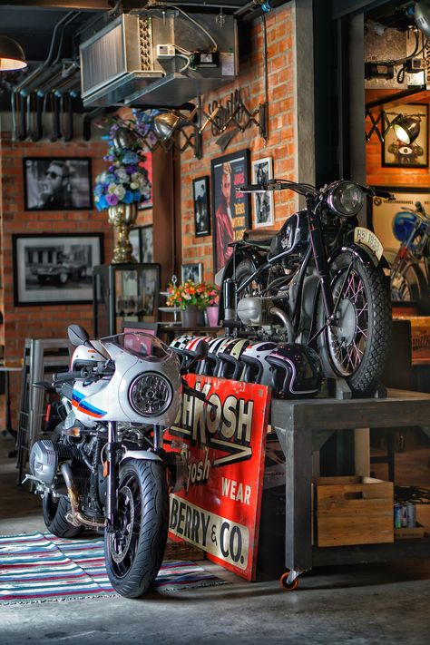
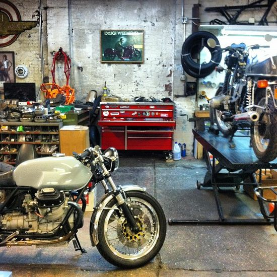
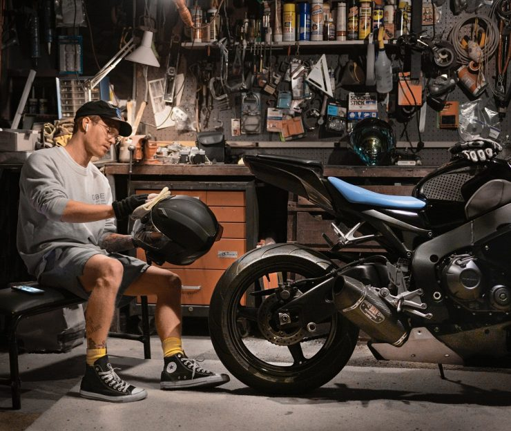
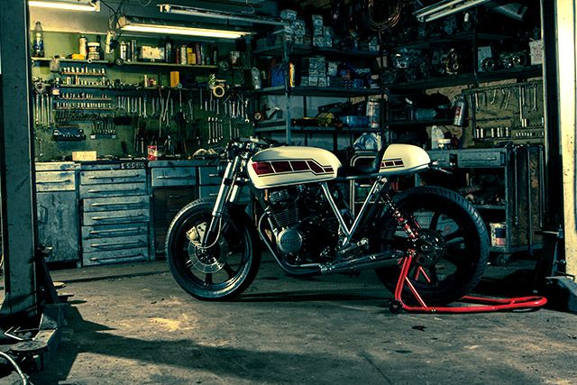
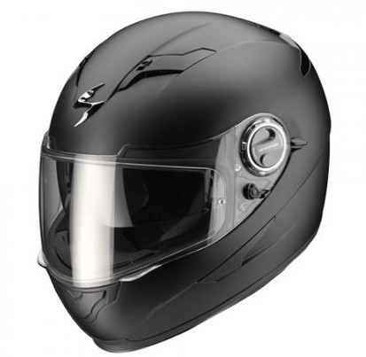
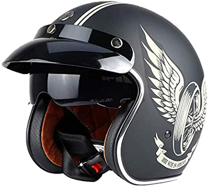
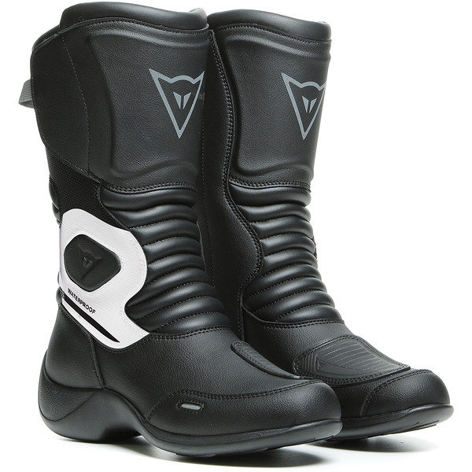
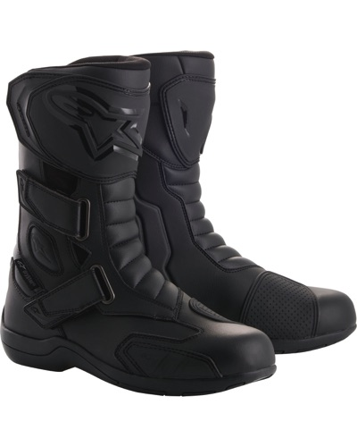
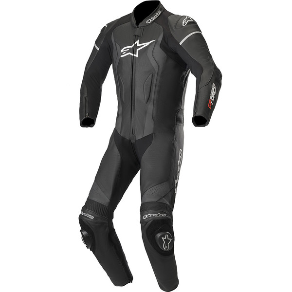
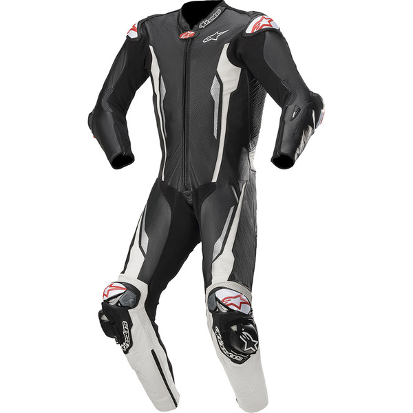

Nous vous souhaitons la bienvenue sur notre site. Ici on ne parle que de deux (2) roues et de son monde,alors mettiez vous a l'aise car ça va chauffer. 
Le monde du custom. Qu'est ce que c'est? Le custom est de transformé quelque chose a un autre et mettre un peu du style et de touche personnelle. Pour bien commencer tout le monde peut customiser n'importe quel moto mais ça a besoin d'une grande imagination et du sens du design pour avoir une touche stylé. Alors nous vous proposions notre savoir faire et nos experiences et materiels pour retoucher votre moto pour la rendre plus stylé et plus vintage qui pourrait en bavé des gens (n'importe qui). 
Taverne Motorcycle Custom vous offre le soin complet de vos petits joujoue et l'intégraliter des entretiens. Nous vendons aussi des pieces a des prix raisonnable et nous l'installions GRATUITEMENT. 
 Alors comme vous venez de voir nos travail consiste a améliorer les motos a les rendres vintage pour vivre des moments du passé avec leur mode de style. Bref nous vous souhaitons de venir nous rendres visite et de nous confiez vos petits joujoue avec confiance et ainsi intégrer notre grande famille.
Alors ici on peut voir les différentes base de custom que nous pouvons faire et que nous pouvons vous proposez, qui sont a la mode. Mettez-vous à l'aise car on va commencer par nos spécialité et que nous allons vous montrez nos travail.
Ici on a un cafer racer qui est une moto de base routière très classe et stylé. Ce style est d'origine Américaine qui date des années 90 "vivent les années 90's". On n'en fabrique plus à partir des années 2000 mais par contre on peut customiser certaines moto a en devenir une. Mesdames et Messieurs je vous présente le Cafer Racer.
On va vous montrez une de nos spécialité qui est le scrambler c'est une moto tous terrain qui date des années de guerre car c'est une moto passe partout, robuste ,fort et qui na peur de rien. Elle est faite a base de moto cross.Beaucoup de gens custom leur cross chez nous pour en faire des scrambler pour être un peu plus stylé et revenir vers les années 90's "vivent le vintage". Mesdames et Messieurs j'ai l'honneur de vous présentez le Scrambler.
OK OK maintenant passons a quelque chose de démentiel, quelque chose qui est du lourd. Elle est fait pour les gens qui aimes la puissance et rouler vite avec une stabiliter a coupé le souffle. Mesdames et Messieur je vous présente nos premier gamme de Boober.
Pour en finir nous avons une gamme exceptionnel pour les rockeur j'espère que vous le connaissiez déjà. Mesdames et Messieur j'ai l'immense honneur de vous présentez le Chopper.
Casque Intégral  Prix:$200.000
Casque Vintage  Prix:$350.000
Botte Crossroad  Prix:$275.000
Botte routière  Prix:$300.000
Combinaison  Prix:$500.000
Combinaison 2.0  Prix:$650.000
La moto est une passion qui permet aux enfants de rêver d'être adulte, et aux adultes de rester des enfants
.